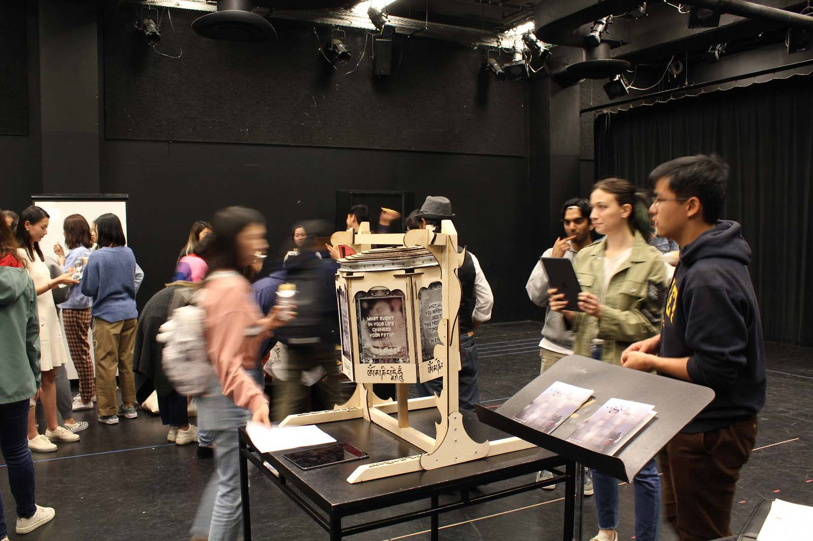
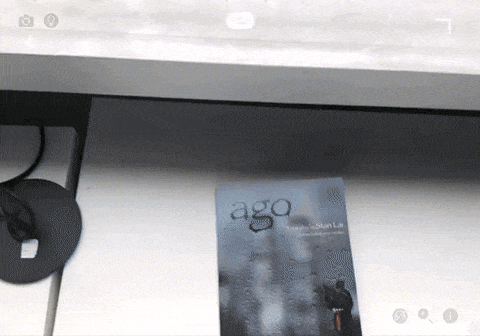
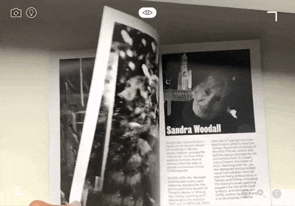
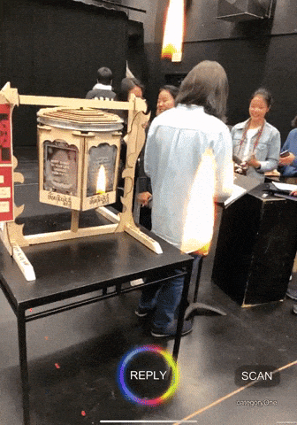
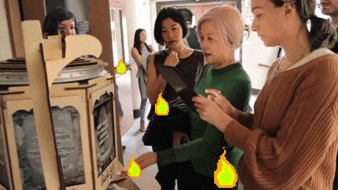
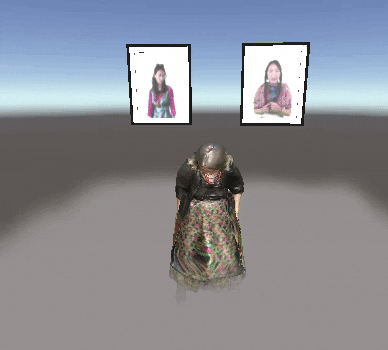
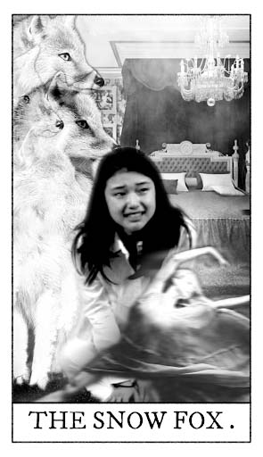
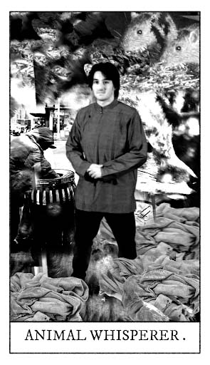
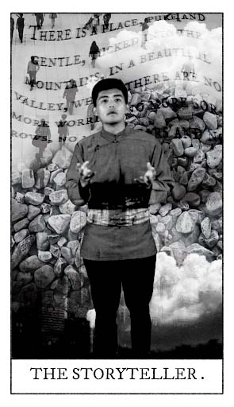

<!DOCTYPE html><html lang="en"><head><meta charset="utf-8"><meta name="viewport" content="width=device-width, initial-scale=1.0"><title>cdste</title><link rel="stylesheet" type="text/css" href="//fonts.googleapis.com/css?family=Ubuntu+Mono|Lato"><link rel="stylesheet" href="../../res/main.css"><link rel="stylesheet" href="../../res/grid.css"><link rel="stylesheet" href="../../res/project.css"></head></html><body><div class="project-page"><div class="body_div"><div class="vertical_center"><a href="../../index.html"><div id="site_title">$ cd Ste<div class="box blink"> </div></div></a><div class="project-title">Augmented Reality Theater</div><div class="role"><span class="bold">Role:</span>ideation, team lead, research, AR software development</div><div class="blurb">This project explored possibilities for Augmented Reality in Theater.
In collaboration with a workshop-style theater class, the AR Theater team developed a couple prototypes
that demonstrate how AR can expand the experience of attending a theater performance.
There were three prototypes: The Program, the Prayer Wheel, and the Tarot Cards.</div><div class="role bold">The Program</div><div class="blurb">With the help of Artivive (startup from skydeck) we designed a program that is filled with hidden scenes and director and actor interviews.
Amazing<a href="https://molecule.github.io/" target="_blank" class="sub-link">Molly</a>led this portion of the project an filmed and edited all of the actors for the AR Scenes.<br><br>For the AR experience audience members could download the Artivive app and point their mobile device at the play’s
program and enacted scenes or interviews play overlayed on the program.</div><div data-colcade="columns: .grid-col, items: .grid-item" class="col-2 grid"><div class="grid-col grid-col--1"></div><div class="grid-col grid-col--2"></div><div class="grid-item"><div class="grid-img"></div></div><div class="grid-item"><div class="grid-img"></div></div></div><div class="role bold">Prayer Wheel</div><div class="blurb">This experiment was a laser cut spinning wheel that mimics the tibetan prayer wheel (prominent theme in the play).<br><br>For the AR experience audience would spin the wheel, scan a question and leave an audio message answering it.
Audio messages become little fires in AR that other people can click on and listen to.</div><div data-colcade="columns: .grid-col, items: .grid-item" class="col-2 grid"><div class="grid-col grid-col--1"></div><div class="grid-col grid-col--2"></div><div class="grid-item"><div class="grid-img"></div></div><div class="grid-item"><div class="grid-img"></div></div></div><div class="role bold">Tarot Cards</div><div class="blurb">Audience members could take Tarot cards home that represent different characters in the play.
Each tarot card contains a small animation that represents that character’s inner emotions.
In a way it is a window into unseen feelings and moments the characters go through before and after the duration of the play.
These cards were used to give audience members a sense of continuation of the play, as if it
lived on beyond the live performance.</div><div data-colcade="columns: .grid-col, items: .grid-item" class="grid"><div class="grid-col grid-col--1"></div><div class="grid-col grid-col--2"></div><div class="grid-col grid-col--3"></div><div class="grid-item"><div class="grid-img"></div></div><div class="grid-item"><div class="grid-img"></div></div><div class="grid-item"><div class="grid-img"></div></div><div class="grid-item"><div class="grid-img"></div></div><div class="grid-item"><div class="grid-img"></div></div></div></div></div></div><script src="https://ajax.googleapis.com/ajax/libs/jquery/1.8.3/jquery.min.js"></script><script src="https://unpkg.com/colcade@0/colcade.js"></script><script src="../../res/app.js"></script></body>